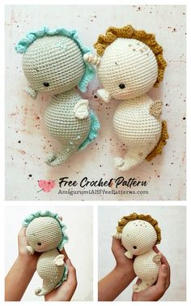
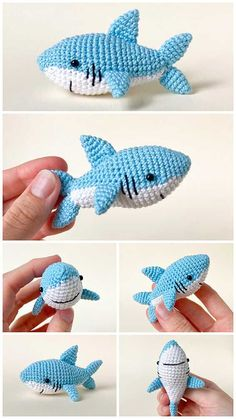
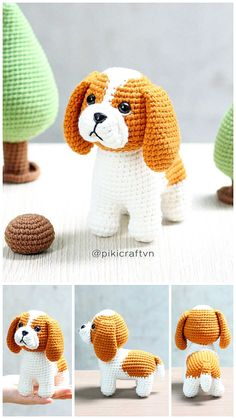
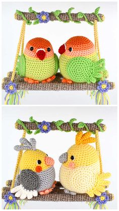
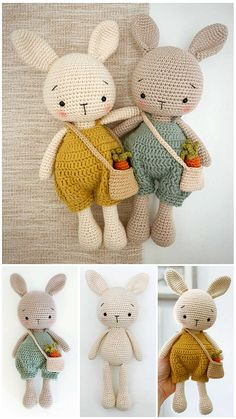
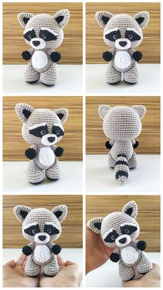
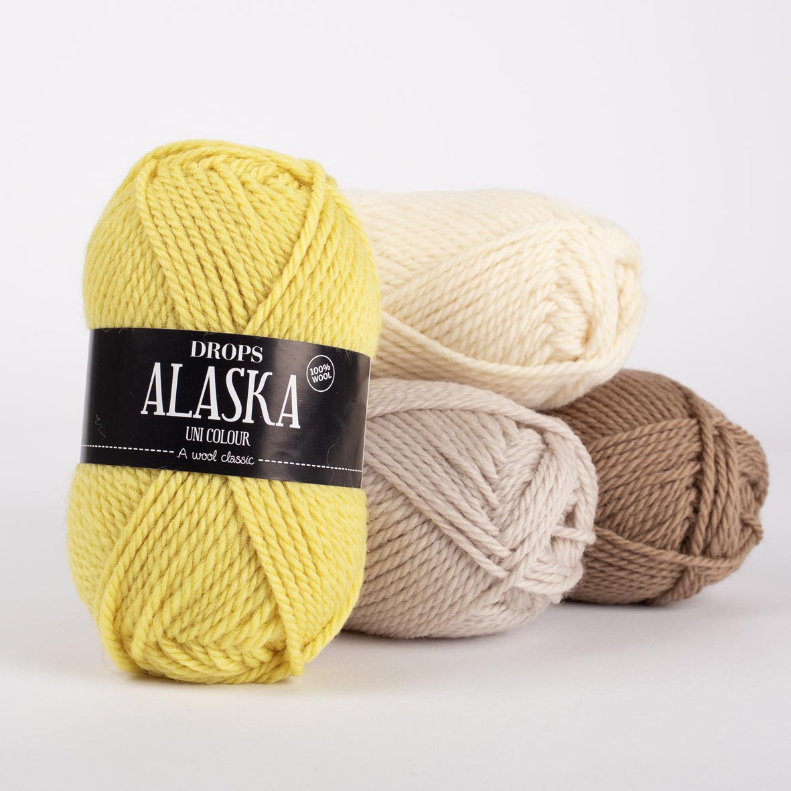
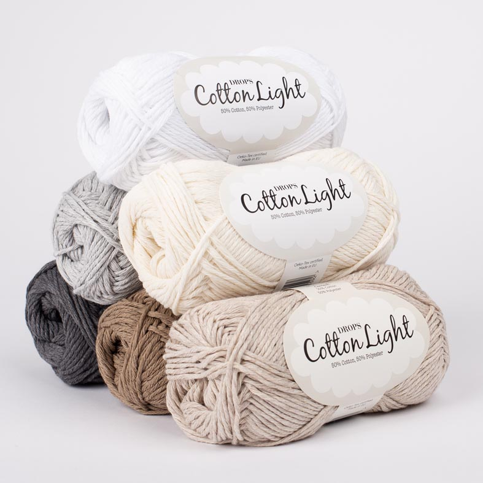
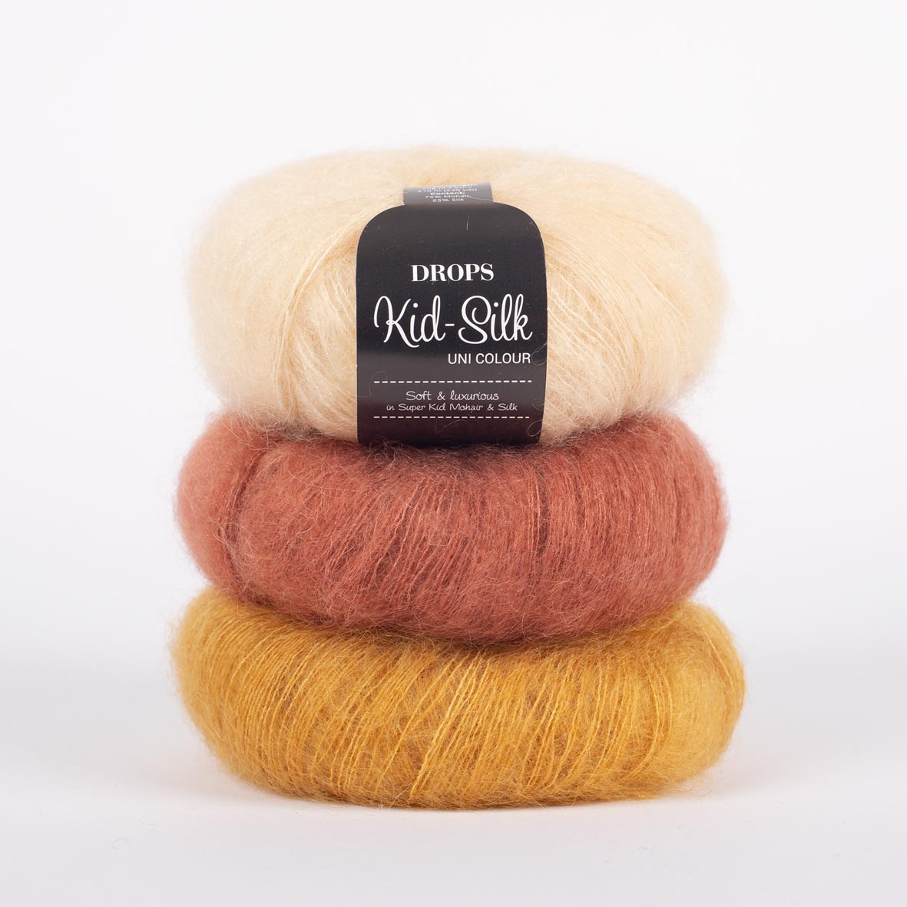
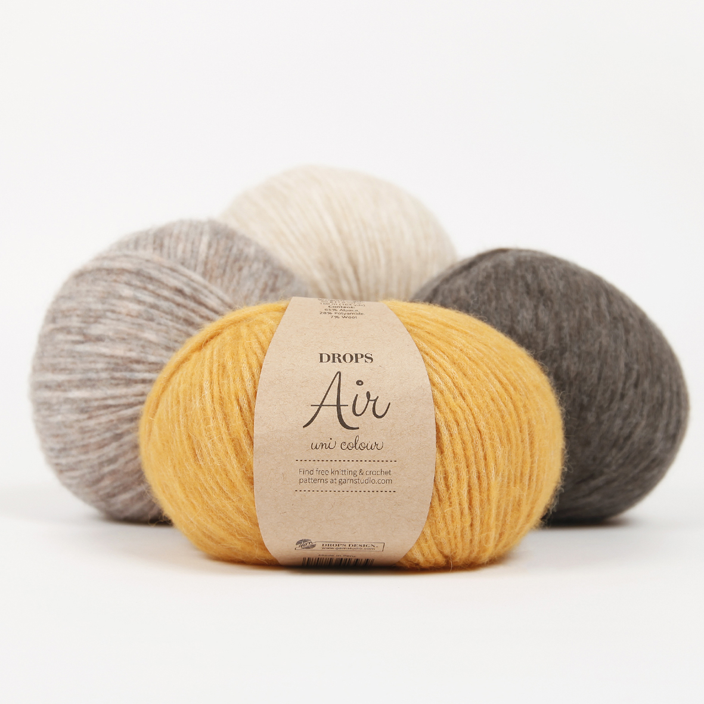

Amigurumi? Az mi?
Az amigurumi horgolt vagy kötött kitömött játékfigurát takar és az elkészítés technikájának a neve.
És honnan ez a furcsa név? A név a technika eredetére utal ez eredetileg egy japán technika. Az eredeti
japán
figurák készítésének technikája, neve, a szó maga keleti névsorrendben, magyaros átírásban.
ami(horgolt, kötött) nuigurumi (kitömött játékfigura)
Jó 10 éve kezdett el terjedni széles körben ez a technika és kifejezés, az eredeti Japán kulturából kitörve az eredeti japán formáktól eltérve sajátos formákat öltve. Leginkább állatokat készítettek ezzel a módszerrel, de közkedvelt módszer, különféle tárgyak, bábuk, babák készítéséhez is. Napjainkban ezzel a technikával készült a közkedvelt mesefigurák, mesehősök megalkotása is hódit.
Vissza az oldal tetejéreFigurák






Fonal típusok anyaguk szerint

Gyapjú
A gyapjú a bárányokról levágott, viszonylag durvább elemi szál. Két különleges tulajdonsággal rendelkezik, a szálakon található pikkelyek miatt érzékeny a hőre, és nemezelhető. A bárány fajtájától függően a gyapjú tulajdonságai és megjelenése változatos lehet. A tiszta élő gyapjú egyenesen a bárányról levágott szöszből készül, nem már elkészült gyapjúdarabokból újrafelhasznált szálakból.

Pamut
A pamut magját körülvevő szál, szinte tisztán cellulózból áll. A pamut általában fehér, de zöldes és barnás változatok is léteznek. A pamutszálat a leggyakrabban fonalnak vagy cérnának fonják, amiből puha légáteresztő textíliákat készítenek, amelyek nagyszerűen használhatók nyári ruhának, alsóneműnek, kiegészítőnek.

Moher
Ez a szál az angóra kecskékről származik, és luxus alapanyagnak számít. A moher fonalak melegek, mint a gyapjú, de sokkal könnyebbek. Strapabíróak, könnyen, szépen festhetőek, de nem nemezelődnek könnyen. A moher fonalaknak jellegzetes fénye van, mert különleges módon verik vissza a fényt. Annak ellenére, hogy az elemi szálak viszonylag kemények, a moherből gyakran fonnak könnyű, “habos” fonalakat, így könnyű, különleges darabokat lehet belőlük készíteni.

Alpaka
Az alpaka szösz, az alpaka állatról lenyírt szőr. Szerkezete hasonló a birkagyapjúhoz. A puhaságát a szál kicsi átmérője adja. Puha, strapabíró, selymes természetes szál. Az alpaka szőre nem nemezelődik, vagy göbösödik könnyen, attól függően, hogyan fonják, lehet könnyű vagy nehéz. Miközben hasonlít a gyapjúhoz, nem szúr, és nem tartalmaz lanolint sem, ezért hipoallergén. A sok színes árnyalat mellett az alpaka természetes színeit is megtalálhatod a színskálánkon.